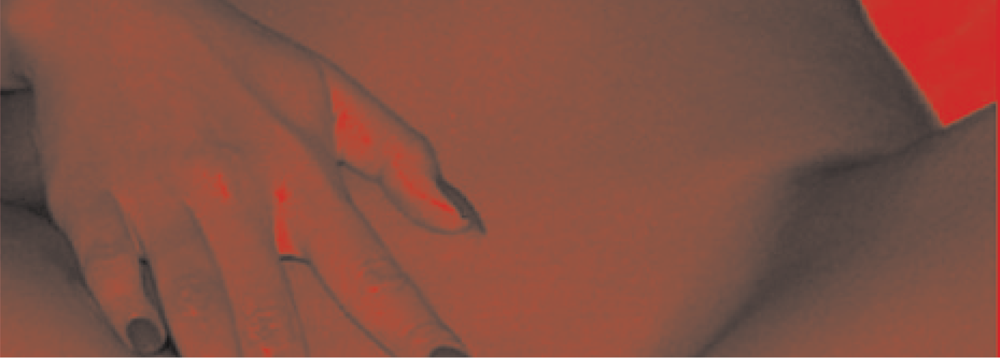
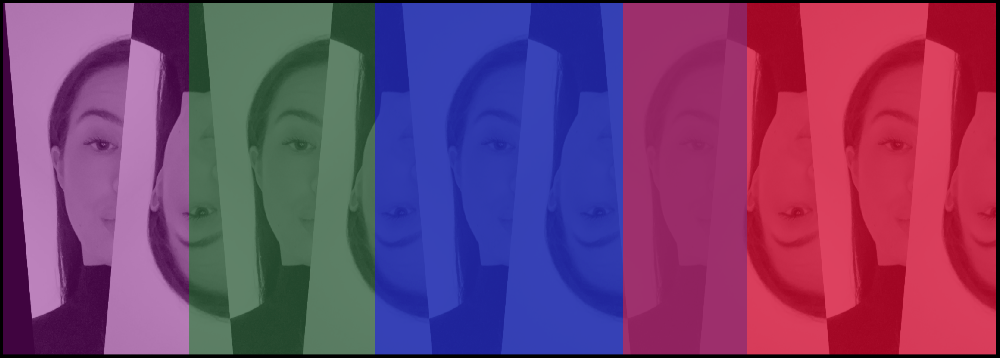
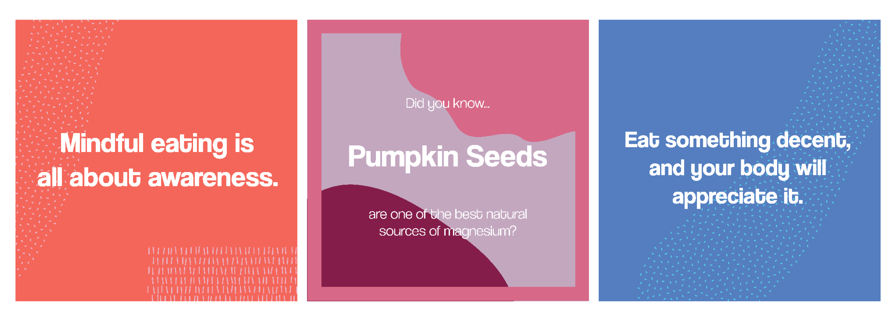

Julia Lane
About
Contact
Project Title: Digital Archive
Format: Website
Supervised by: Tony Palmer
Link to
webdesign
A digital archive of photographic expression.
Using photography I explored the form of the human body. Bringing the images together using html and css coding.

Project Title: The Big Issue
Format: Printed Publication
Supervised by: Dan Milne
See more
here
Creating a publication design in response to a social issue. I chose to explore the inequality in the understanding of rape. Aiming to spark a conversation around consent and better equip young individuals in their sexual relationships.
Project Title: Contact Zone
Format: Poster, Printed Publication
Supervised by: Simone Hill
Creating a publication design in response to a social issue. I chose to explore the inequality in the understanding of rape. Aiming to spark a conversation around consent and better equip young individuals in their sexual relationships.

Project Title: Digital Publishing
Format: Website
Supervised by: Uriah Grey
Link to
webdesign
Digital Publishing was a semester long class that explored the relationship between coding and design. In this subject we explored many different themes including reflecting poster designs through code and archival design.
Dpub

Internship work
Format: Content Creation
Supervised by: Rob La Terra
Link to
webdesign
Working for Javier creative I have created a series of instagram posts to reflect the aesthetic and philosophy of established brands.

Internship work
Format: Content Creation
Supervised by: Rob La Terra
Link to
webdesign
Working for Javier creative I have created a series of instagram posts to reflect the aesthetic and philosophy of established brands.